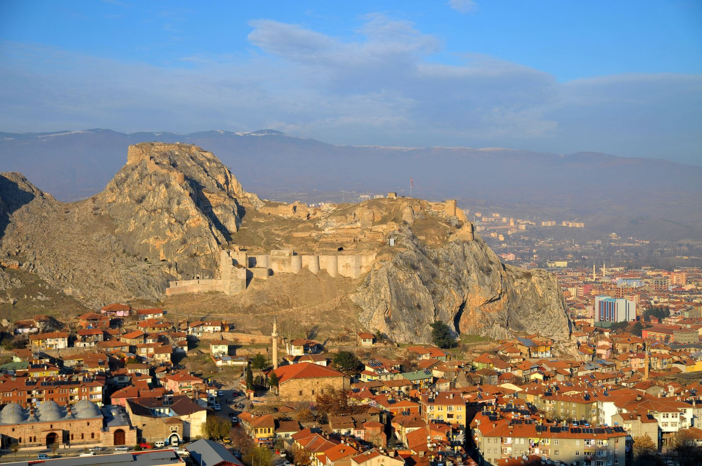

II. Abdulhamid’in padişah oluşunun 25. yılı için halkın yardımlarıyla, mutasarrıf Bekir Paşa ve Belediye Reisi Mütevelli oğlu Enver Bey tarafından yaptırılmıştır.
Dört yöne büyük kadranlarla her yarım saat ve saat başlarında iki dakika ara ile tam çalar durumdadır.
TAŞHAN
1626-1632 yılları arasında yapılmış bir Osmanlı eseridir.
İçeride alışveriş yapabileceğiniz, bir şeyler yiyip içebileceğiniz mekanlar mevcut.
2 katlıdır.
İçte 76 dışta 103 mekan vardır.
Anadolu'daki en büyük hanlardan birisidir.
İçeriden çekilmiş bir görüntü:
TOKAT KALESİ

Roma Dönemi'nde yol güvenliği için kurulmuş ve yaklaşık 500 yıl Bizans egemenliğinde kalmıştır.
ilk defa 1074 yılında Danişmend Melik Gazi tarafından fethedilmiştir.
Osmanlı Devleti zamanında "Çardak-ı Bedevi" olarak anılan zindan, başta Bizans İmparatoru A.Diogenis olmak üzere birçok ünlüye hapis olmuştur.
Ayrıca 362 basamaklı bir merdiven ile kalenin dibine inilebilmektedir. Günümüzde bu merdivenin yolu kapalı durumdadır.